11 Món Ăn Đường Phố Việt Nam Khiến Thực Thần Quốc Tế Mê Mệt
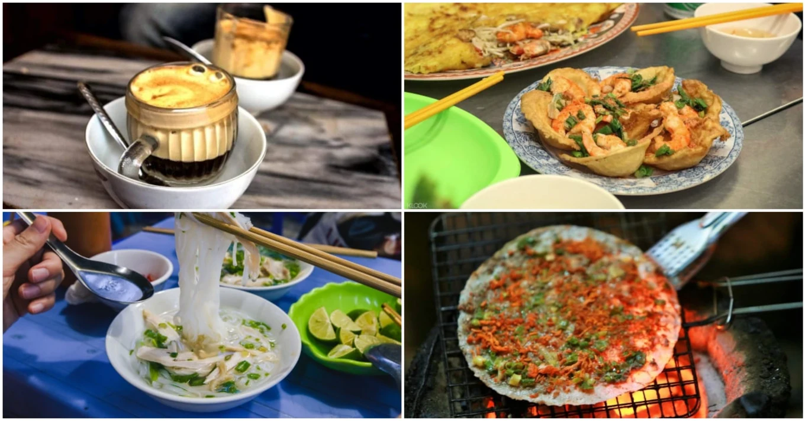
Ẩm thực Việt Nam đa sắc màu là sức hút “siêu to, khổng lồ” của đất nước hình chữ S. Cùng VIETNAMFOOD khám phá xem món ăn đường phố Việt Nam nào đang “gây bão” các diễn đàn ẩm thực trên thế giới nhé!
Từ gói cuốn, ren rán đến bánh tráng trộn, món ăn đường phố là cách tuyệt vời nhất để “thưởng thức” nét đẹp văn hoá của một vùng đất. Mặc dù thị hiếu địa phương có thể khác biệt nhưng nhìn chung, ẩm thực Việt Nam từ Bắc chí Nam đều sở hữu hương sắc đậm đà - cực kỳ “gây nghiện” từ lần nếm thử đầu tiên. Du khách quốc tế đang xôn xao về món ăn đường phố Việt Nam nào nhất? Cùng tìm kiếm câu trả lời ở ngay bên dưới thôi.
1. Phở
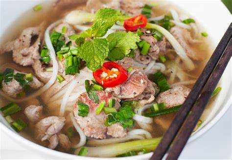
Phở là lựa chọn không thể hiển nhiên hơn khi nói về đặc sản đất Việt. Sợi phở mềm dai - thường được làm từ bột gạo - ăn cùng nước hầm xương mặn mà, thịt bò, thịt gà, rau mùi và tương đậu. Sự kết hợp nghe qua có vẻ giản đơn này hoá ra lại tạo nên “sự bùng nổ vị giác” thực thụ - giúp phở trở thành “món ăn quốc dân” được ưa chuộng tại nhiều trung tâm du lịch nổi tiếng; đơn cử như Hà Nội, Đà Nẵng, Nha Trang, Vũng Tàu. Phở Việt Nam còn được biến tấu thành nhiều phiên bản khô như phở chiên giòn, phở xào, phở cuốn… cực kỳ hấp dẫn.
2. Bánh Mì
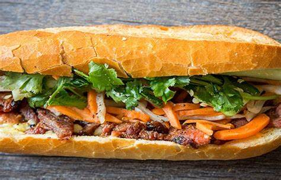
Lấy cảm hứng từ món bánh mì baguette của người Pháp nhưng bánh mì Việt Nam lại nhanh chóng ghi dấu ấn trên bản đồ ẩm thực quốc tế bằng sắc màu riêng biệt. Bánh mì Việt Nam có phần vỏ giòn thơm, ruột bánh mềm dai - thường được ăn kèm với rau mùi, hành, chả lụa, pa-tê, trứng, thịt heo, thịt gà… Nhân bánh mì được kết hợp tương đối ngẫu hứng, tuỳ theo khẩu vị người mua và người bán, nên mới có sự ra đời của những cái tên “huyền thoại” như bánh mì dân tổ, bánh mí chấm sữa, bánh mì chấm đường, bánh mì kẹp kem…
3. Bánh Tráng Trộn
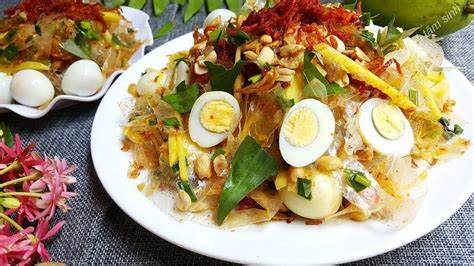
Chẳng biết từ bao giờ, bánh tráng đã trở thành cái tên không thể thiếu khi bàn về những món ăn đường phố nổi tiếng Việt Nam. Bánh tráng trộn đơn giản là bánh tráng bột gạo được cắt thành miếng nhỏ vừa ăn, trộn cùng với nước xốt thịt bò, rau mùi, xoài cắt sợi, đậu phộng rang, khô bò hoặc khô gà. Bạn có thể tìm thấy bánh tráng trộn ở hầu hết các tỉnh thành tại Việt Nam, tập trung nhiều ở khu vực cơ quan, công sở và trường học. Giá của một phần bánh tráng trộn khá mềm - chỉ từ 10.000đ đến 50.000đ.
4. Bánh Tráng Nướng
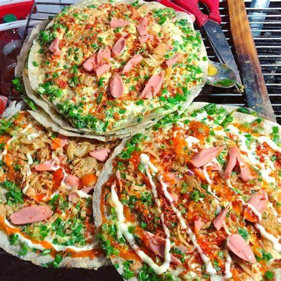
“Bánh tráng nướng có mặt ở Việt Nam khi nào?” - đây vẫn là một bí ẩn chưa lời giải đáp. Chỉ biết rằng trong vòng 10 năm trở lại đây, bánh tráng nướng là món ăn đường phố “quen mặt” tại Sài Gòn, Đà Lạt, Đà Nẵng và nhiều hơn thế nữa. Qua năm tháng, phiên bản bánh tráng nướng của mỗi vùng miền cũng có nhiều thay đổi. Nếu bánh tráng nướng Sài Gòn giản đơn với phần nhân trứng cút, mỡ hành và ruốc thì bánh tránh nướng Đà Lạt “đầy đặn” hơn hẳn khi có thêm xúc xích, thịt viên… Vào những hôm trời mưa phùn mà được cắn miếng bánh tráng nướng nóng hổi, giòn tan rồi nốc cạn ly trà đá thì còn gì khoan khoái hơn?!
5. Gỏi Khô Bò
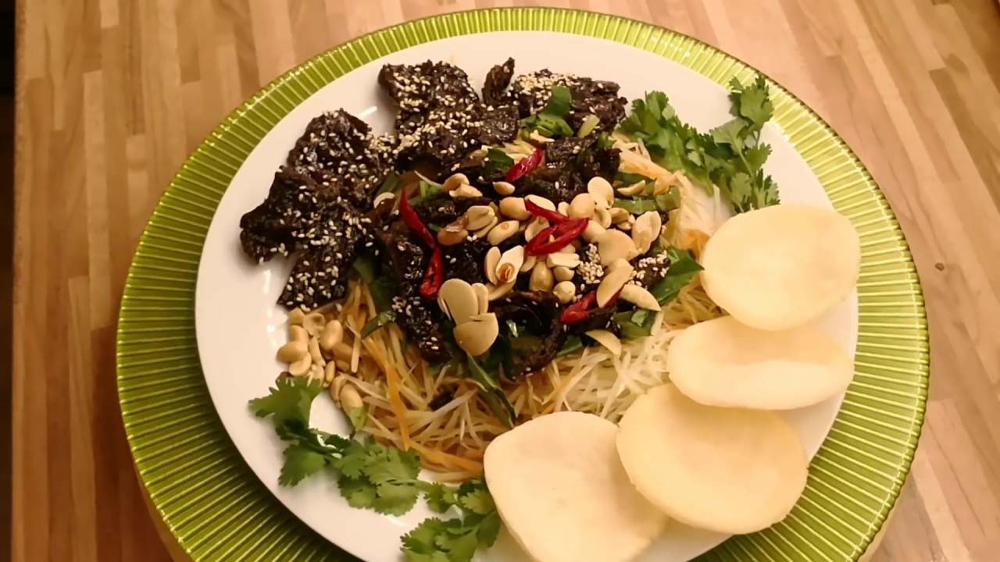
Có không ít du khách nước ngoài lầm tưởng món gỏi khô bò Việt Nam với gỏi Som Tam Thái Lan. Dù được chế biết với thành phần nguyên liệu tương tự là đu đủ xanh bào sợi, đậu phộng rang, rau mùi, khô bò đen… hương vị của hai món đặc sản này hoàn toàn khác biệt. Gỏi khô bò là sự kết hợp hài hoà của ba vị ngọt - mặn - cay, ăn cùng bánh phồng tôm giòn tan thì càng tuyệt hảo. Đây là món ăn vặt được chị em phụ nữ ưa chuộng vì vừa ngon miệng vừa không sợ… tăng cân.
6. Gỏi Cuốn
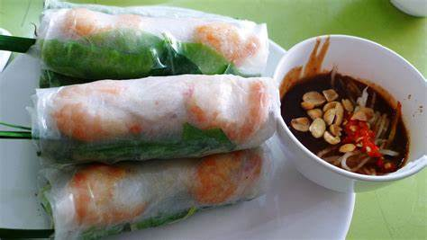
Nếu đang tìm kiếm món ăn đường phố “healthy & balance”, gỏi cuốn là gợi ý tuyệt vời dành cho bạn. Gỏi cuốn được làm từ bánh tráng bột gạo, bún tươi, tôm thịt, rau sống - chấm cùng tương đen hoặc nước mắm mặn ngọt tuỳ sở thích. Bên cạnh gỏi cuốn tôm thịt, gỏi cuốn nhân bì hay mực cũng rất được giới thực thần quốc tế ưa chuộng.
Có thể bạn chưa biết: nếu chả giò trong tiếng anh là “spring roll” (cuốn mùa xuân) thì gỏi cuốn có tên là “summer roll” (cuốn mùa hạ) đấy.
7. Bánh căn
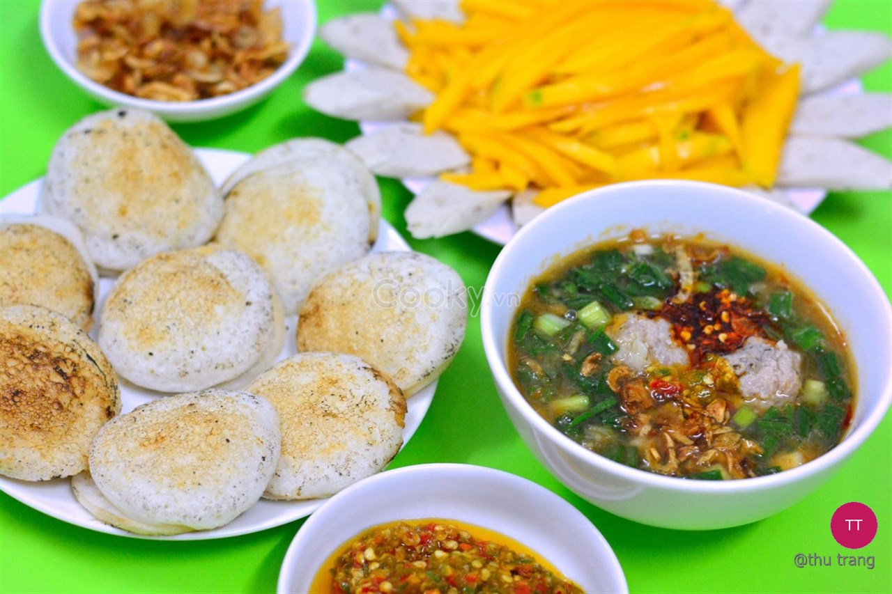
Bánh căn là đặc sản được yêu thích ở nhiều thành phố ven biển, đơn cử như Đà Nẵng, Phan Thiết, Vũng Tàu và Nha Trang. Vỏ bánh giòn ôm lấy phần nhân trứng, mực hay tôm thịt nóng hổi - cho thêm chút mỡ hành rồi ăn cùng với nước mắm chua cay hoặc nước xốt cá nục đều “ngon xuất sắc”. Bánh căn mang đến cảm giác no lâu nên là lựa chọn thông dụng cho bữa xế hoặc bữa chiều ở Việt Nam.
8. Bánh Xèo
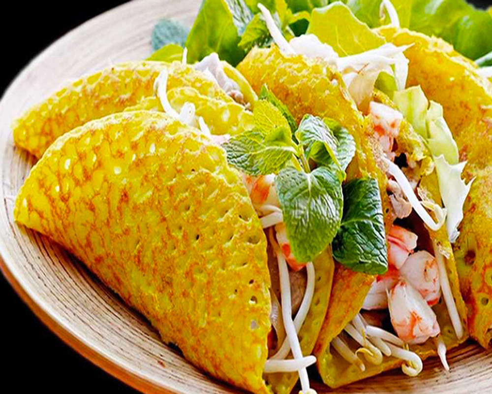
Nổi tiếng như “pancake phiên bản Việt” nhưng bánh xèo là trải nghiệm ẩm thực hoàn toàn khác biệt so với món pancake của các quốc gia Âu Mỹ. Bánh xèo là món ăn mặn, với phần vỏ bánh được rán giòn có màu vàng bắt mắt; nhân bánh bao gồm giá hẹ, tôm thịt hoặc mực. Khi ăn, người ta gói một phần bánh cùng rau sống rồi chấm cùng nước mắm chua cay. Bánh xèo miền Trung có kích thước nhỏ với nhân bánh đầy đặn hơn bánh xèo miền Nam nhưng nhìn chung, món ăn đường phố này luôn luôn “ghi điểm” bởi hương vị thơm ngon cùng giá thành “hạt dẻ”.
9. Phá Lấu
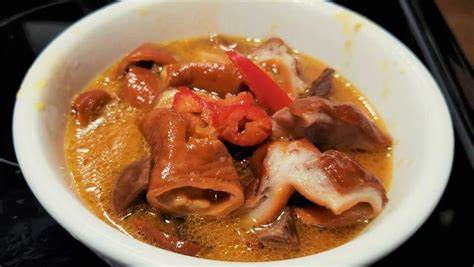
Công bằng mà nói, phá lấu là món ngon đường phố khá “khó nhằn” đối với du khách đến từ phương Tây. Nguyên nhân vì đặc sản này được chế biến từ nội tạng động vật - phần bị xem là “không sạch sẽ” ở một vài nền văn hoá. Lòng - sau khi được làm sạch, tẩm ướp gia vị - sẽ được chiên vàng rồi hầm mềm cùng nước cốt dừa. Phá lấu ăn kèm với bánh mì hoặc mì gói là món khoái khẩu của học sinh, sinh viên và giới văn phòng Việt Nam.
10. Café Trứng
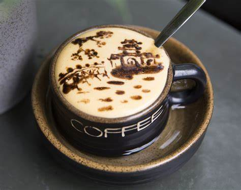
Việt Nam được biết đến như đất nước của nụ cười và… café. Café Việt Nam chẳng những ngon mà còn đậm đà - thừa khả năng “quật ngã” những #teamKlook “nặng đô” nhất. Vậy nên khi biết đến café trứng, không ít bạn bè quốc tế đã xiêu lòng bởi hình thức đáng yêu và hương vị béo thơm mới lạ. Muốn uống café trứng chuẩn vị, bạn nhất định phải đến thủ đô Hà Nội - nơi có thương hiệu Café Giảng đã tồn tại trên dưới 50 năm. Chỉ một cốc café trứng giá 30.000đ là đủ nạp năng lượng cho ngày dài năng động rồi đấy.
11. Chè
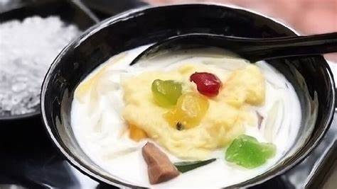
Chỉ cần một từ “chè” thôi đã gói gọn hàng trăm công thức tráng miệng siêu ngon, siêu ngọt ngào của người Việt. Danh sách chè ở Việt Nam nhiều không kể xiết - biến hoá phong phú từ sắc màu, kích cỡ đến hương vị. Nguyên liệu chính thường thấy trong các mòn chè là nước cốt dừa, gạo nếp, đậu, đường kính, thạch trái cây… Người yêu sự thanh mát có thể chọn sâm bổ lượng, chè khúc bạch, chè hạt sen; còn hội hảo ngọt ắt hẳn sẽ mê mệt chè đậu xanh, chè ba màu…
 VIETNAMFOOD
VIETNAMFOOD